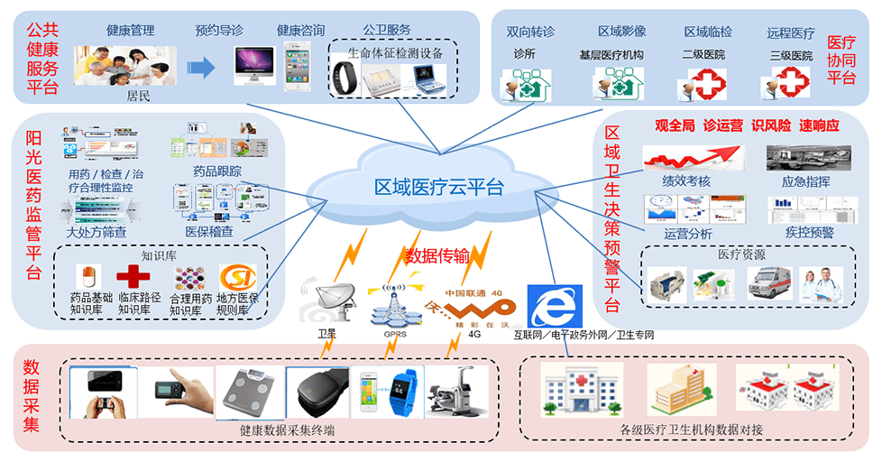

蓝创科技区域医疗产品，以监管和服务为主线，致力于通过信息化手段，创新医疗卫生管理和服务方式，重点着力于数据整合、医疗协同、医药监管、便民服务四个方面，促进优质医疗资源纵向和横向流动，使医疗卫生管理和服务向集约化、整体化、互联网化、智慧化方向发展。

总体架构
蓝创科技区域医疗云平台是以居民电子健康信息为基础，以服务居民为核心，构建区域医疗信息共享平台，建立彼此共享交换的居民电子健康档案、电子病历、全员人口3大数据库；实现公共卫生、医疗服务、医疗保障、药品管理、计划生育、综合业务6大业务应用与数据互联互通；构建市-县-乡-村4级网络接入，1张居民健康卡贯穿诊疗、公共卫生、新农合服务全过程，从而实现“百姓一张卡、政府一张屏”的总体目标！
平台应用
分级诊疗系统
依托“区域医疗云平台”，通过平台双向转诊子系统实现基层首诊、分级诊疗、预约诊疗服务、双向转诊等辅助功能，形成“小病在基层、大病进医院、康复回社区”的就医格局，为加快分级诊疗制度落地和应用奠定基础。
远程会诊系统
通过平台远程会诊子系统，可以充分发挥大医院或专科医疗中心的医疗技术和医疗设备优势，与医疗条件较差的边远地区疗机构或基层乡镇卫生院连接，可以提升其医疗技术水平，使大医院有限的医疗卫生资源发挥最大的作用，实现基层百姓也能享受到远地大医院专家的诊断、治疗和咨询需求。
影像集中诊断中心平台
通过平台远程会诊子系统，可以充分发挥大医院或专科医疗中心的医疗技术和医疗设备优势，与医疗条件较差的边远地区疗机构或基层乡镇卫生院连接，可以提升其医疗技术水平，使大医院有限的医疗卫生资源发挥最大的作用，实现基层百姓也能享受到远地大医院专家的诊断、治疗和咨询需求。
妇幼保健信息系统
通过平台远程会诊子系统，可以充分发挥大医院或专科医疗中心的医疗技术和医疗设备优势，与医疗条件较差的边远地区疗机构或基层乡镇卫生院连接，可以提升其医疗技术水平，使大医院有限的医疗卫生资源发挥最大的作用，实现基层百姓也能享受到远地大医院专家的诊断、治疗和咨询需求。
掌上医院系统
健康城市掌上医院系统提升了居民的就医体验，缓解了医患矛盾。实现了诊疗过程（处方、缴费、排队等）信息推送；检查检验报告查看；预约诊疗服务；慢病管理、随访结果及日常健康管理建议信息推送；孕产妇健康管理关键信息提醒；计划免疫、接种信息通知及提醒；新农合结算及个人账户信息查询；个人全程健康档案查阅。
产品价值
一、 效率提升：
数据实现动态流转，死档变活档；一处建档、多源维护、共享使用；业务监管、绩效考核智能化。
二、 资源整合：
整合异构系统，数据共享、互联互通；优化流程，减轻负担；高效、便捷、易用新模式。
三、 方便百姓
提升健康管理体验；数据跑人不跑、简化就医环节；信息透明，减少医患矛盾。
四、 促进医改：
保基层、强基层、建机制；上下贯通、横向流动；积极探索分级诊疗就医新秩序。
产品目标
百姓一张卡：
作为个人信息载体，集医疗机构就诊、公共卫生服务认证、医疗报销等功能于一身，记录个人全生命周期的健康信息。
政府一张屏：
通过区域医疗云平台实现区域内各业务系统数据的集中展现和分析，实现了一屏管理、一屏展现。
典型案例
-项目背景
新疆沙湾县是新疆地区经济优先发展较快的县市之一，辖区面积1.31万平方公里，总人口49万人，其中地方人口31万人，辖9镇、3乡、5个农牧林场和2个管理处、250个村。因此，新疆沙湾县卫生计生管理部门要求，借助沙湾县智慧医疗项目的建设，推进县域内健康服务的信息化发展，制定相关信息数据标准规范，实现医疗保障、医疗服务、健康管理等信息的共享；实现网上预约挂号、居民健康档案信息查询等服务功能；实现县域内各医疗卫生机构之间的业务协同需求。
-应用效果
通过实施区域医疗信息平台，实现了新疆沙湾县内各医疗卫生机构之间的信息共享和互联互通，并基于平台重组和优化了医疗卫生服务业务流程，实现了医疗服务、人口计生、公共卫生、药品管理、医疗保障和综合管理等六大业务应用，为沙湾县卫生计生管理部门提供了科学决策提依据；通过平台提供的居民健康门户网站及掌上医院系统，全县居民可以采用电脑、自助查询机和手机等多种方式查看自己的健康档案信息、网上预约挂号、缴费以及自助打印等信息服务功能；通过平台提供的业务协同子系统，县级各医疗机构已全部实现与基层12个乡镇卫生院之间的远程会诊和双向转诊业务，真正实现了“小病在社区、大病去医院、康复回社区”的分级诊疗制度。